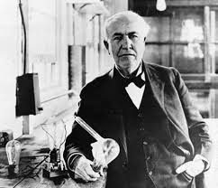
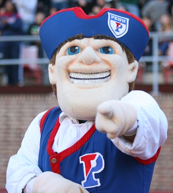

Back the most unlikely transfer
in Ivy League history

BE IN CONTINOUS MOTION
"Everything comes to him who hustles while he waits."
Thomas Edison
What I've been doing
Student at Thinkful
Thinkful?
Where usually one course is more than enough at a time, I took two. Thinkful is designed to take you from a beginner to a junior developer and has done so. I am finishing up the course for both Front-end (HTML, CSS, Javascript, jQuery, JSON, AJAX) and Ruby on Rails.

Founder at Domi
Domi?
Our mission is to make housing easy for every student. At the beginning of the month we crossed 200 users pre-product. I am build the protoype now and then bringing on the beta users into the system.

Penn Organizer
What?
Currently not being a Penn student has in not ways stopped me from acting like one :) I have been working with the heads of the Penn Tech Entrepreneurship Club on a couple events. I am also working to bring Recess to Penn.
UChicago Acceptance